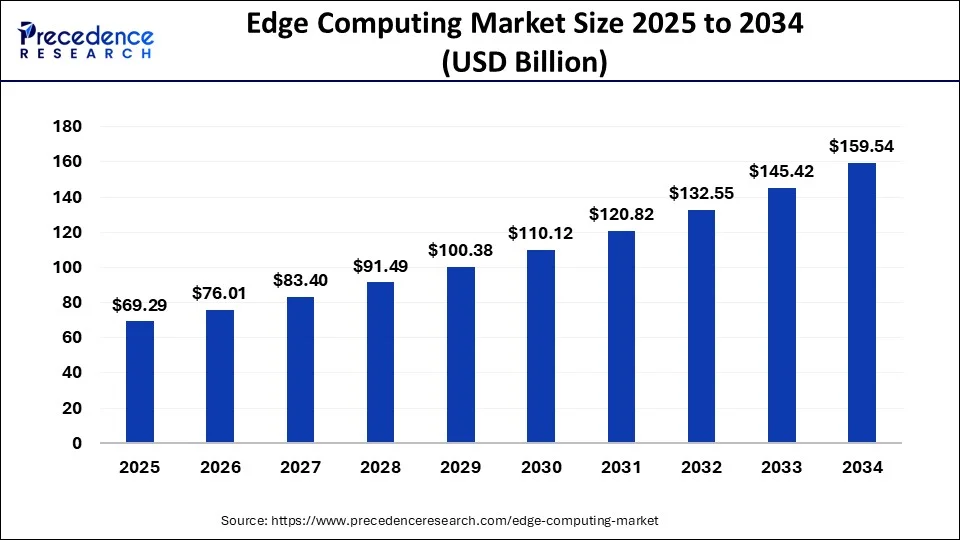

Mercado en expancion
Se calcula que el tamaño del mercado global de computación de borde será de USD 432,94 mil millones en 2024 y se prevé que aumente de USD 564,56 mil millones en 2025 a aproximadamente USD 5,132,29 mil millones en 2034, creciendo a una CAGR del 28% entre 2025 y 2034.